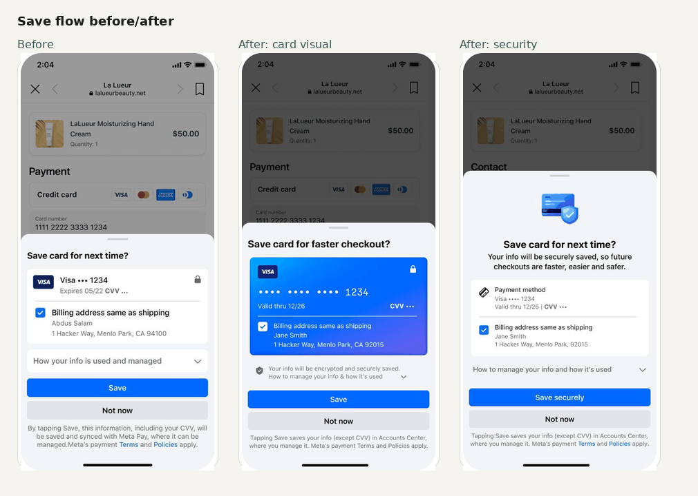
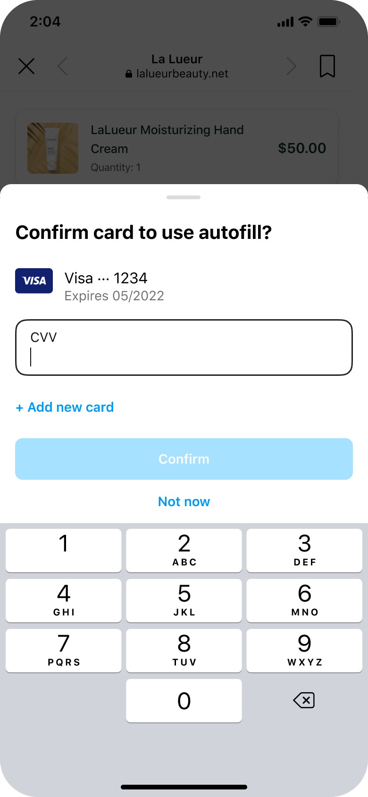
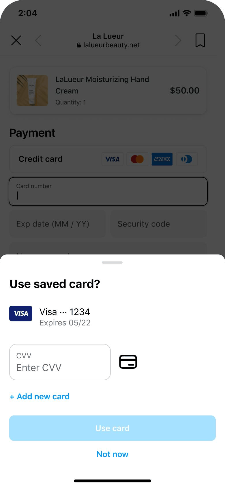

Designing trust into Autofill
Content optimization and a scalable framework for a global mobile browser experience on Meta apps.
Autofill helps people save and reuse payment and contact information on merchant websites opened inside Meta’s in-app browser, including Facebook and Instagram. The work focused on making save and use flows clearer, more security-forward, and easier to scale across apps, platforms, markets, privacy requirements, and experiment variants.
↗ Reduced full disclosure copy by 46%, cut consent text by more than 50%, and created an approved framework for future Autofill experiments.

The problem
Autofill was asking users to trust Meta with sensitive payment data at a high-friction moment: checkout. The existing language was legally accurate, but it read like a compliance notice and did not clearly explain what was saved, who had access, or how users stayed in control.
The work was also hard to change. Legal and privacy guidance existed, but the rationale behind approved language was scattered across multiple documents and prior reviews. There was no shared source of truth that explained what had been approved, why it mattered, and how it should apply to future variants.
My role
I led content design for Autofill in H1 2026, partnering with product, design, UXR, legal/privacy, and engineering across save and use flows. The work included content strategy, research input, disclosure optimization, experiment variants, app-specific strings, approval workflows, and implementation details.
I also partnered with UXR to shape and interpret the research behind the messaging work. I contributed copy variants for study stimuli, used prior research to identify trust and comprehension gaps, and translated findings into content principles for the save and use flows.
Approach
- Reconstructed legal and privacy rationale from scattered guidance so reviewers, design, product, and content could work from the same frame of reference.
- Shifted the content strategy from compliance-first to security-forward and user-centered.
- Optimized copy across three save-flow experiment directions: value messaging, content/design optimization with a card visual, and security-forward messaging.
- Created content across Facebook and Instagram versions, iOS and Android formatting rules, and regional privacy requirements.
- Built reusable guidance for future app, market, eligibility, and experiment variants.
Why this was more than a rewrite
Each content decision had to work across multiple apps, product states, regions, platforms, and experiment variants. A string that referenced “Facebook” in one experience needed an Instagram-specific counterpart in another. Save and use flows also had different legal, privacy, and formatting requirements depending on whether CVV could be saved, whether the user was eligible, and which market rules applied.
In plain language, the framework had to support flows where Meta could save CVV and flows where CVV could not be saved or the user was not eligible; U.S., rest-of-world, and stricter European data-privacy requirements; Facebook and Instagram app language; iOS and Android formatting rules; and multiple experiment variants across value messaging, visual/card treatment, and security-forward content.
That made content quality inseparable from content operations: tracking strings, variant logic, approvals, and implementation details mattered as much as the words themselves.
Content optimization: making the moment clearer
The existing language had three problems: passive where users needed agency, compliance-forward where users needed reassurance, and twice as long as it needed to be. The direction was active voice, encryption and control, and a clearer action — not just a disclosure.
Content decisions
The changes below show how the save flow moved from compliance-heavy language to clearer, trust-building product language while preserving legal coverage.
| Element | Before | After | The thinking |
|---|---|---|---|
| Headline | “Save card for next time?” | “Save card for faster checkout?” | Transactional → value-driven. Users are mid-checkout — give them a reason. |
| Security messaging | Not present | “Your info will be encrypted and securely saved.” | Trust signal was absent entirely. UXR confirmed this was the highest-performing message. |
| Dropdown label | “How your info is used and managed” | “How to manage your info & how it’s used” | “Can be managed” → “you manage.” Agency, not just disclosure. |
| Manage section | 17 words | 7 words | Repetitive phrasing removed. Same information, clearer hierarchy. |
| Autofill settings | 33 words | 21 words | One run-on sentence → two clear sentences. |
| Recommendations | 28 words | 19 words | Conditional phrasing (“we may use…”) → declarative. |
| CTA | “Save” | “Save securely” | Reinforce trust at the exact moment users commit. |
| Footer disclosure | 63 words | 26 words | More than 50% shorter: passive legal block → active, direct, same legal coverage. |
Scalable framework: making the system reusable
The framework was not just about making one prompt shorter. It created a shared source of truth for future work: what had been approved, why it mattered, and how the same logic should apply across apps, markets, eligibility states, and experiment variants.
- Flows where Meta could save CVV, plus flows where CVV could not be saved or the user was not eligible.
- U.S., rest-of-world, and stricter European data-privacy requirements.
- Facebook and Instagram versions of the same experience.
- iOS and Android formatting differences.
- Three save-flow experiment directions: value, card/design optimization, and security-forward messaging.
Use flow: clarifying the CVV step
The use flow had a different problem: users were not sure what they were confirming or why. The revised content made the CVV step more explicit and the saved-card action easier to understand.
- Changed “Confirm card to use autofill?” to “Enter CVV to use saved card.”
- Added clearer CVV guidance and dynamic input cues.
- Changed “Confirm” to “Use saved card” / “Use card.”
- Consolidated four experiment arms into one review cycle.


Impact
- Each nested disclosure section was cut roughly in half.
- Future experiments could start from an approved, user-centered baseline.
- Cleaner language performed at parity with the original, with no early negative regression.
That last point matters: the work cleared compliance debt, reduced cognitive load, and gave the team a stronger baseline without sacrificing performance.
What this demonstrates
This work demonstrates senior content design across content optimization, trust and privacy UX, legal and regulatory influence, UXR synthesis, payments language, app-specific string systems, experimentation, and scalable content operations.